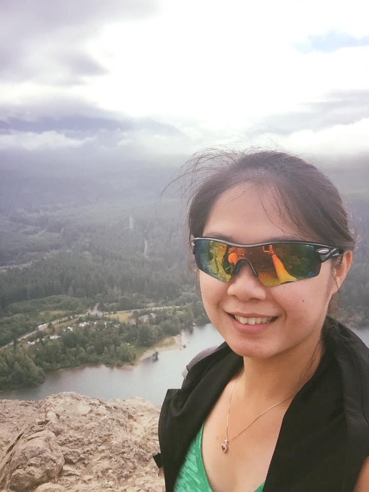

About Me
Hello World! My name is Jennie Khann and here are some fun facts about me:
- PNW Native
- Adrenaline junky - love roller-coaster!
- Skydived 13,500ft 2x
- Ran one full marathon, four half marathons, and numorous 10k/5k fun runs
- Snowboarder
- Photographer/videographer
- Enjoys traveling
- Has driven on the otherside of the road and car in Europe - Most terifying thing ever!
- Bouldering
- Hiking
- Loves videogames
- Tech enthusiast - Always intrigued by the new tech toys
- Changing career from health to tech
As it states above, in the last point, I am changing my career from the health to the tech field. Thus, why I am here in this 6 months bootcamp for fullstack! I believe this is my true calling-to be in tech! I am passionate about the topic and enjoy what I do!
Come back periodically to check out my work!